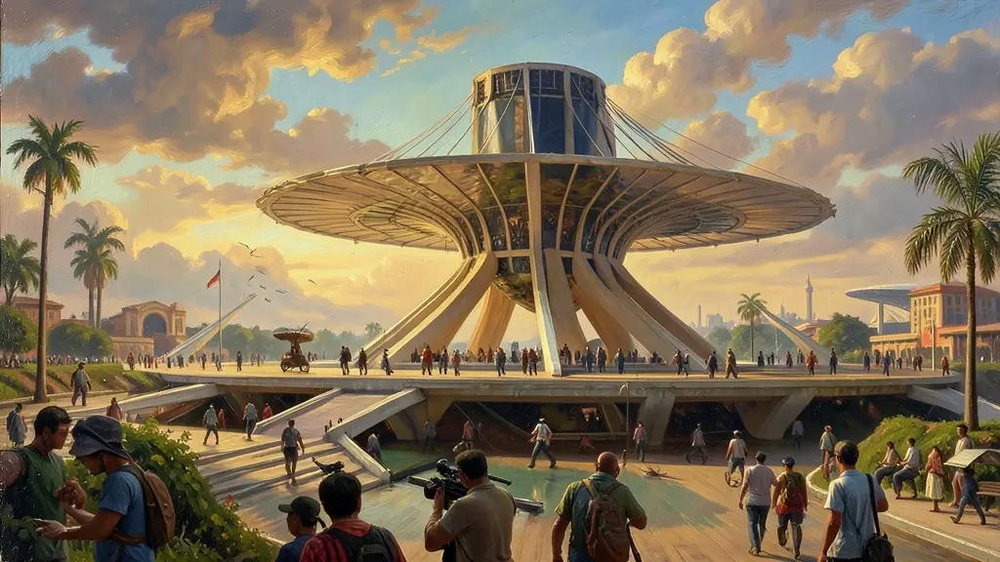
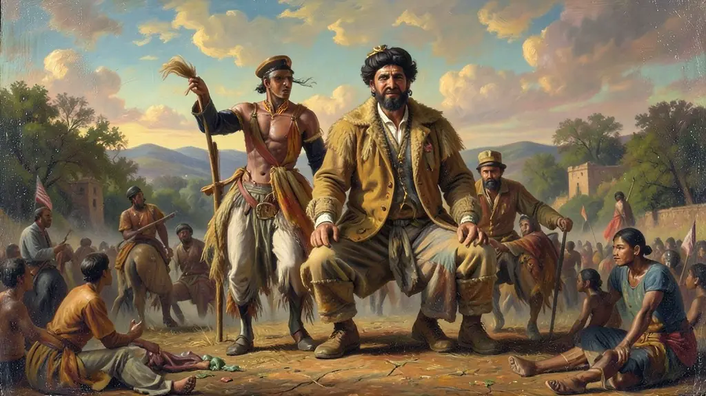

Capítulo 01
1. O Plano de Metas e os '50 Anos em 5'
Juscelino prometeu acelerar o tempo. Seu plano era técnico e ambicioso. Ele acreditava que o Estado deveria dar as condições de infraestrutura (energia e estradas) para que as empresas estrangeiras viessem produzir aqui bens de consumo duráveis (carros, TVs, geladeiras). Isso mudou a face das cidades brasileiras, que começaram a ser desenhadas para os automóveis, abandonando os bondes e as ferrovias.
Capítulo 02
2. Brasília: A Meta Síntese
Brasília nasceu como um símbolo de modernidade e descontinuidade com o passado colonial do Rio. No meio do nada, surgiu o 'Plano Piloto' com formato de avião (ou cruz). A transferência da capital para o Centro-Oeste tinha fins estratégicos de defesa e geopolítica, buscando forçar a ocupação de terras para o agronegócio futuro. Foi uma das maiores obras de engenharia do século XX mundial.

Capítulo 03
3. Os Candangos e a Luta Invisível
Quem construiu Brasília não foram os engenheiros heróis, mas os 'Candangos'. Fugindo da seca e da miséria no Nordeste, milhares de migrantes viviam na 'Cidade Livre' (Núcleo Bandeirante) em condições sub-humanas. Massacre de trabalhadores em canteiros de obras foram registrados mas abafados pela propaganda oficial, expondo a ferida social de um desenvolvimento que não chegava para todos.

Capítulo 04
4. Economia: Crescimento com Inflação
O Brasil crescia 7% ao ano, mas a conta era paga com inflação. JK rompeu com o FMI (Fundo Monetário Internacional) após este exigir cortes de gastos sociais. Juscelino preferiu manter as obras e imprimir dinheiro, o que agradou as elites industriais mas começou a corroer o salário dos trabalhadores mais pobres no final do seu mandato em 1961.
Capítulo 05
5. O Pós-JK e a Herança Política
JK saiu do governo como o 'Presidente Sorriso', mas deixou a inflação subindo e o país em dívida. Seu sucessor, Jânio Quadros, herdou uma economia em frangalhos e um Congresso Nacional dividido entre partidários do desenvolvimento desenfreado e conservadores que queriam o controle das contas públicas. O governo JK é considerado o último respiro democrático pleno antes do golpe de 1964.
O governo de Juscelino Kubitschek (1956-1961), sintetizado no lema '50 anos em 5', marcou o ápice do nacional-desenvolvimentismo no Brasil. Através do Plano de Metas, o governo focou pesadamente em infraestrutura, com destaque para a construção de Brasília e a implantação da indústria automobilística. JK abriu a economia ao capital estrangeiro, estabelecendo parcerias que transformaram o parque industrial brasileiro de uma base leve para uma base pesada e de bens de consumo duráveis.
A construção da nova capital, Brasília, simbolizou o desejo de interiorização e modernidade do país, afastando o centro administrativo do litoral. No entanto, o custo desse crescimento acelerado foi o aumento da inflação e o crescimento descontrolado da dívida externa. Além disso, a prioridade dada ao sistema rodoviário em detrimento do ferroviário moldaria permanentemente a logística ineficiente do Brasil. Apesar da atmosfera de 'anos dourados', as desigualdades regionais se agravaram, com o Nordeste perdendo espaço para o Sudeste industrializado.
Compreender a era JK para o Enem exige analisar as contradições da modernização brasileira. É necessário discutir como a atração de multinacionais mudou o mercado de trabalho e as relações internacionais do país. O governo Kubitschek representou um momento de rara estabilidade democrática e otimismo cultural, mas as dívidas sociais contraídas nesse período alimentariam as crises inflacionárias e políticas que desaguariam na queda da democracia na década seguinte.
Fonte: BENEVIDES, Maria Victoria. O Governo Kubitschek: Desenvolvimento Econômico e Estabilidade Política. Rio de Janeiro: Paz e Terra, 1979.
Atividades interativas
Questões para fixar
O governo Juscelino Kubitschek é associado ao lema '50 anos em 5'. Qual foi a principal ferramenta de planejamento econômico desse período?
A transferência da capital do Rio de Janeiro para Brasília teve como um de seus objetivos estratégicos: